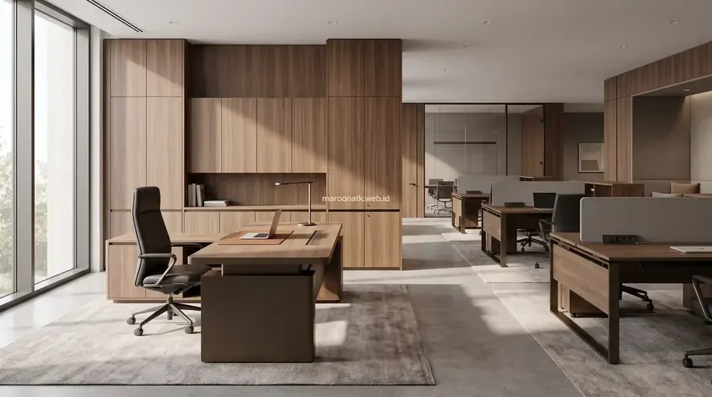

Panduan Kontrak Borongan Custom Furniture Kantor untuk Proyek Ruang Kerja B2B
Custom furniture kantor bersistem kontrak borongan B2B adalah mekanisme pengadaan terintegrasi berbasis Surat Perjanjian Kerja (SPK) yang mengikat vendor berbadan hukum PT untuk melaksanakan site survey, gambar kerja 3D shop drawing, fabrikasi material Melamine Faced Chipboard (MFC) Grade E1 dan plat baja, instalasi di lokasi, hingga penerbitan Berita Acara Serah Terima (BAST) dan e-Faktur PPN 11%.
Ketika sebuah korporat, instansi pemerintah, atau institusi pendidikan merencanakan fit-out kantor baru maupun renovasi total ruang kerja, perabot siap pakai (ready stock) dari toko ritel sering kali tidak mampu mengakomodasi denah arsitektur yang unik, kolom gedung yang menonjol, atau standar identitas visual (corporate branding) perusahaan. Dalam skenario ini, menggunakan sistem kontrak borongan custom furniture kantor menjadi keputusan strategis terbaik bagi tim purchasing.
Sistem borongan memastikan seluruh tanggung jawab teknis, risiko kesalahan ukuran, dan pengelolaan tenaga kerja instalasi dibebankan kepada vendor secara menyeluruh dalam satu kesepakatan harga pasti (lump sum contract). Bersama mitra pengadaan berpengalaman seperti Maroon ATK, perusahaan terlindungi dari risiko pembengkakan anggaran (cost overrun) dan ketidaksesuaian spesifikasi material.

SOP Pengadaan Furniture Kantor B2B: Panduan Lengkap Purchasing Team
Tinjauan 14 langkah Standard Operating Procedure pengadaan furniture kantor skala enterprise bebas risiko.
Perbedaan Kontrak Borongan Custom versus Pembelian Ready Stock
Memahami perbedaan karakteristik antara perabot custom dan ready stock membantu procurement officer menetapkan metode pengadaan yang tepat:
- Custom Furniture (Kontrak Borongan): Dibuat khusus mengikuti kontur ruangan (presisi 100%), pemilihan warna HPL disesuaikan dengan warna korporat, kapasitas penyimpanan dimaksimalkan, dan mencakup pekerjaan instalasi menyeluruh di lokasi. Cocok untuk ruang direksi, meja resepsionis lobby, ruang rapat utama, dan workstation terpadu.
- Ready Stock (Unit Katalog): Menggunakan dimensi modul standar pabrik (misal meja 120x60 cm), pilihan warna terbatas, dan siap dikirim dalam hitungan hari. Cocok untuk penambahan meja staf insidental dalam jumlah kecil.
Matriks 12 Tahapan Pengadaan Kontrak Borongan Custom Furniture B2B
Berikut adalah tabel matriks komprehensif alur proyek custom furniture kantor mulai dari perumusan kebutuhan hingga garansi pemeliharaan:
| Tahap Pengadaan | Dokumen / Output | Pihak Bertanggung Jawab | Risiko Jika Diabaikan | Kontrol Purchasing |
|---|---|---|---|---|
| 1. Brief Kebutuhan | Term of Reference (TOR) Desain | User / General Affairs | Desain tidak sesuai alur kerja staf | Verifikasi jumlah staf dan fungsi ruang |
| 2. Site Survey & Pengukuran | Lembar As-Built Data Lapangan | Tim Teknis Vendor & GA | Meja atau credenza tidak muat terpasang | Pengukuran digital laser 3D di lokasi |
| 3. Konsep Desain & 3D Visual | Render 3D Interior & Layout Plan | Desainer Interior Vendor | Ekspektasi visual berbeda dengan hasil akhir | Approval render visual oleh manajemen |
| 4. Gambar Kerja (Shop Drawing) | Shop Drawing Detail Berskala | Drafter Vendor & Tim Proyek | Salah potong bahan saat fabrikasi | Cek detail dimensi sambungan & engsel |
| 5. RAB / BOQ & SPH Resmi | Bill of Quantities (BOQ) & SPH | Purchasing Officer & Vendor | Timbul biaya tersembunyi perakitan/kirim | Harga borongan mengikat (lump sum) |
| 6. Negosiasi & Kontrak SPK | Surat Perjanjian Kerja (SPK) | Procurement Manager & Direksi | Sengketa hukum jika terjadi keterlambatan | Klausul denda keterlambatan & garansi |
| 7. Fabrikasi di Workshop | Laporan Mingguan Progres Fabrikasi | Tim Produksi Vendor | Kualitas bahan diturunkan tanpa izin | Kunjungan audit fisik ke workshop vendor |
| 8. Pengiriman (Delivery) | Surat Jalan Resmi Pengiriman | Logistik Vendor & Gudang | Barang lecet atau rusak saat transit | Pemeriksaan kondisi kemasan packaging |
| 9. Instalasi & Setting Lapangan | Checklist Harian Perakitan | Teknisi Lapangan Vendor & GA | Kerusakan lantai kantor atau instalasi miring | Supervisi langsung tim teknisi internal |
| 10. Quality Control (QC Audit) | Lembar Checklist QC Akhir | Komite QC Klien & Supervisor | Menerima barang cacat tanpa kompensasi | Uji fungsi rel laci, kunci, dan kelurusan |
| 11. Serah Terima Pekerjaan (BAST) | Berita Acara Serah Terima (BAST) | User, Purchasing, Direktur Vendor | Pelunasan dilakukan saat proyek belum tuntas | Penandatanganan BAST setelah 100% tuntas |
| 12. Garansi & Pemeliharaan | Sertifikat Garansi Resmi PT | After-Sales Service Vendor | Biaya perbaikan membengkak jika rusak cepat | Jaminan perbaikan onsite gratis 1–3 tahun |

Koordinasi teknis antara tim surveyor, arsitek interior, dan pengawas purchasing menjamin presisi fabrikasi modul meja dan lemari custom sesuai denah arsitektur.

Inspirasi Desain Meja Kerja Modern Minimalis untuk Ruang Kerja Sempit
Solusi penataan workstation hemat tempat dan ergonomis untuk memaksimalkan kapasitas ruang kantor modern.
Pentingnya Legalitas Vendor Berbadan Hukum PT dan e-Faktur PPN 11%
Memilih mitra pelaksana custom furniture kantor bukan sekadar mencari workshop dengan penawaran termurah. Perusahaan dan instansi wajib memperhatikan aspek legalitas hukum:
- Badan Hukum Resmi (PT): Memiliki legalitas akta pendirian, Nomor Induk Berusaha (NIB) berbasis risiko, dan NPWP berstatus Pengusaha Kena Pajak (PKP).
- Penerbitan e-Faktur PPN 11%: Setiap invoice resmi wajib disertai Faktur Pajak elektronik yang valid di sistem Direktorat Jenderal Pajak (DJP) agar tidak menimbulkan sanksi audit keuangan perusahaan.
- Mitigasi Risiko Proyek Mangkrak: Kontrak dengan vendor non-badan hukum (perorangan/tukang lepas) sangat berisiko saat terjadi wanprestasi atau pengabaian jadwal delivery tanpa adanya payung hukum SPK yang mengikat.

Berapa Harga Paket Furniture Kantor per Workstation di Jakarta?
Kalkulasi anggaran pengadaan meja kerja staf, partisi akustik, dan kursi ergonomis secara transparan.
Checklist Purchasing Sebelum Menandatangani Kontrak SPK
Pastikan dokumen kontrak kerja mencantumkan klausul-klausul perlindungan berikut:
- Spesifikasi Material Baku: Ketebalan papan MFC/MDF minimal 25 mm grade E1, merk lapisan HPL, merk rel laci full extension, dan ketebalan plat baja lemari minimal 0,7 mm.
- Jadwal Pelaksanaan (Time Schedule): Timeline pasti mulai dari approval gambar kerja, fabrikasi workshop, delivery, hingga batas akhir serah terima BAST.
- Klausul Retensi Pembayaran: Penahanan termin retensi (5–10%) selama masa garansi pemeliharaan 1–3 bulan untuk menjamin komitmen vendor memperbaiki kendala awal.
- Layanan Konsultasi Pengadaan Furniture Kantor Terpadu: Ketersediaan PIC representatif yang responsif menindaklanjuti perubahan teknis di lapangan.
Wujudkan Renovasi Custom Furniture Kantor Anda Bersama Maroon ATK
Gratis Site Survey, Gambar Kerja 3D & SPH Resmi Berkop PT
Percayakan pengadaan custom furniture kantor Anda kepada Maroon ATK. Legalitas PT resmi, workshop mandiri, tim instalatur berpengalaman, e-Faktur PPN 11%, dan garansi terjamin.
Kesimpulan: Eksekusi Kontrak Borongan Custom Furniture yang Bebas Risiko
Rangkuman Keputusan Procurement
Sistem kontrak borongan adalah opsi terbaik untuk menghadirkan interior kantor berstandar tinggi yang presisi dengan denah ruang kerja.
- Disiplin 12 Tahapan: Ikuti alur mulai dari site survey, persetujuan shop drawing detail, hingga pengujian mutu saat BAST ditandatangani.
- Skema Pembayaran Aman: Terapkan termin bertahap proporsional (DP, progres fisik, dan pelunasan pasca BAST).
- Pilih Vendor PT Terpercaya: Bermitra dengan Maroon ATK menjamin kepatuhan pajak e-Faktur PPN 11%, jaminan mutu material MFC grade E1, dan garansi pemeliharaan resmi.
Pertanyaan Umum (FAQ) Kontrak Borongan Custom Furniture
Pembelian ready stock mengandalkan modul ukuran baku katalog pabrik dengan waktu kirim instan, sedangkan sistem kontrak borongan custom furniture mencakup pekerjaan terintegrasi dari site survey dimensi ruang, gambar kerja 3D shop drawing, fabrikasi material custom (MFC/HPL/baja), instalasi di lokasi, hingga garansi pemeliharaan dalam satu ikatan kontrak SPK resmi.
Skema termin pembayaran standar B2B yang aman meliputi: Uang Muka (DP) 30–50% saat penandatanganan SPK dan persetujuan shop drawing, Pembayaran Progres 30–40% saat barang tiba di lokasi sebelum perakitan, dan Pelunasan 10–20% setelah penandatanganan Berita Acara Serah Terima (BAST) 100% dan verifikasi e-Faktur PPN 11%.
Vendor berbadan hukum PT resmi memiliki akuntabilitas legalitas hukum yang jelas melalui Surat Perjanjian Kerja (SPK), kepatuhan perpajakan dengan penerbitan e-Faktur PPN 11%, jaminan garansi tertulis 1–3 tahun, serta kepemilikan workshop dan tim teknisi internal profesional yang memitigasi risiko proyek mangkrak.

Arby Ardiansyah
Praktisi pengadaan B2B berpengalaman lebih dari 5 tahun dalam manajemen rantai pasok interior perkantoran, tata kelola kontrak borongan furniture, dan e-procurement instansi pemerintah dan swasta di Indonesia.